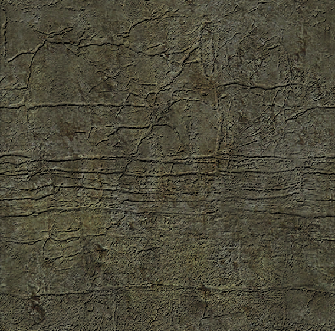
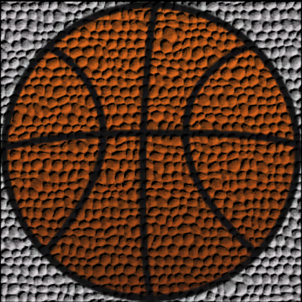
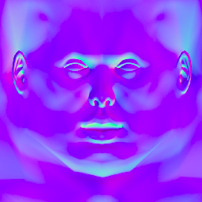

BLINN BUMP MAPPING
Snowflake
Base Texture : 0.000106 seconds Snowflake Normal Map: 0.000153 seconds
Face: 0.000165 seconds Metal Bumps: 0.000197 seconds
Grass
Base Texture : 0.000114 seconds Rocks: 0.000121 seconds
Tiles(Self-Generated): 0.000125 seconds Face: 0.000122 seconds
Worn-out Wall
Base Texture : 0.0001 seconds Bricks : 0.000105 seconds
Weathered Rock(Self-Generated): 0.000111 seconds Snowflake Normal Map: 0.000134 seconds

5) FRESH STRAWBERRY : 0.000119 seconds
Metal bumps normal map
4) BOUNCY BASKETBALL : 0.000126 seconds
Leather Normal Map 
Remarks:
- The Bump Mapping that has been implemented here is reminiscent of Blinn’s Bump Mapping(1978) and not the more modern technique of Normal Mapping(1996).
- Custom Normal Maps have been generated using a custom Python script. However, this method does not provide us with normal maps that capture a lot of detail since we are using the Grayscale image as an approximation for height map of texture.
- To aid us with reading an image file, we made use of SOIL(Simple OpenGL Image Loader). This allowed us to create a texture from input image without having to do the dirty work of parsing the file byte by byte.
Issues:
- Due to time constraints, only Diffuse Lighting has been implemented. This explains the lack of change in lighting of surface when camera is moved around.
- Bump Mapping has been implemented only for textures bound to square objects. A stretch goal could have been implementing it for curved shapes. It’s effect can be most profoundly seen by the lack of the bumpy Torus(Donut) that is given in the original paper.
- The Legacy OpenGL practices that we’ve been using proved really detrimental for the entire Lighting pipeline. To use a metaphor suitable to our project, using Fluorescent light bulbs in place of LED bulbs pushed up the power consumption.
References:
Appendix(Normal Maps used):
Face: Rocky:

Bricks: Tiles(Self-Generated):
Metal Bumps: Weathered Rock(Self-Generated):
Leather: